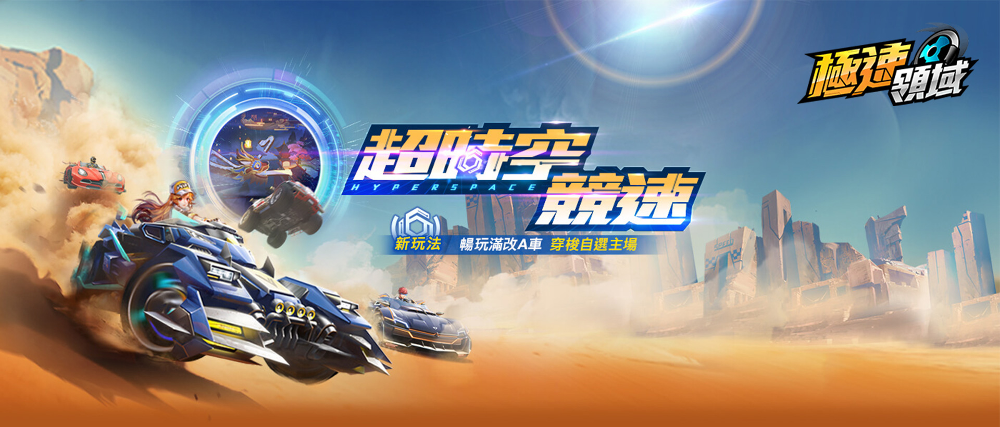

歡迎來到賽車手遊類介紹網站
請點擊上面的選單來瀏覽更多內容。
遊戲類型簡介
當今手機遊戲市場上，賽車類型手遊一直以其刺激的競速體驗和逼真的賽車模擬而受到廣泛喜愛。透過高品質的畫面和流暢的操作，玩家可以感受到極速飆車的刺激快感，並挑戰各種賽道和對手。賽車手遊通常提供豐富的車輛選擇、多樣的賽道設計，以及多人即時對戰的模式，讓玩家能夠展現他們的駕駛技巧，同時與全球玩家一較高下。無論是單人挑戰還是多人對戰，賽車手遊都能帶給玩家極具挑戰性和娛樂性的遊戲體驗。
遊戲特色
- 定制你的賽車： 製作屬於自己風格的賽車！你可以隨心所欲地調整顏色、外觀套件，打造獨一無二的行車吉祥物。
- 即時對戰全球玩家： 隨時隨地挑戰全球頂尖賽車手！透過網路連線，感受真實對戰的刺激快感。
- 探索多樣賽道： 從城市街道到雪域山脈，賽車場地應有盡有。每一條賽道都是一場全新的挑戰。
- 真實駕馭體驗： 借助最先進的物理引擎，感受真實的駕馭快感。加速、轉彎、剎車，一切都處在你的掌握中。
- 沉浸式故事模式： 不僅僅是賽車，還有引人入勝的故事情節。通過完成任務，揭開賽車世界的冒險故事。
- 天氣變化影響比賽： 挑戰不同天氣狀況，從陽光普照到雨中漂流，每場比賽都有新的挑戰等著你。
- 多樣操控方式： 觸控、陀螺儀、搖桿，隨你喜好。找到最適合你的操控方式，享受順暢的遊戲體驗。
- 支援虛擬現實（VR）： 戴上VR設備，彷彿置身賽道中。感受身歷其境的視覺和聽覺震撼。
- 每日/每週活動挑戰： 參與精彩活動，贏取獎勵，挑戰每日、每週不同的賽事，不斷突破極限。
- 全球排名競技： 爭奪全球排名榜首！與全球頂尖賽車手一較高下，成為賽道的巔峰之王。
- 社交互動： 分享你的賽車技術、照片和影片，與其他熱愛賽車的玩家建立交流，共同感受速度的魅力。
遊戲截圖
評價和評論
你的評分：